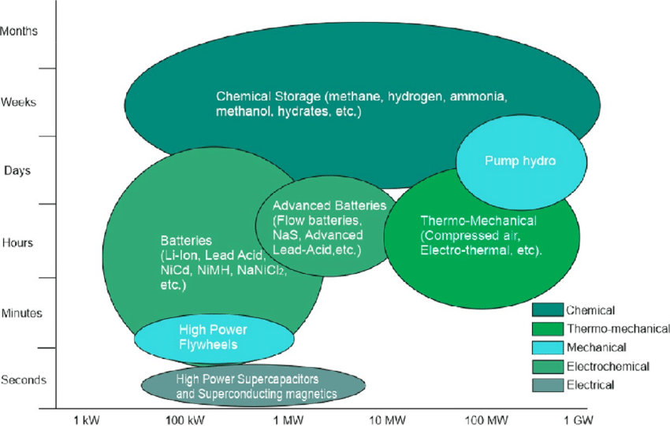

Stabilní energie. Bez ohledu na počasí.
SSCC je energetická infrastruktura, která propojuje obnovitelné zdroje, geotermii a chemická úložiště do jednoho řízeného systému.
Problém vs. řešení
Přechod na obnovitelné zdroje není jen otázkou výroby energie, ale především její dostupnosti v čase.
Současný stav
- Výroba z OZE je proměnlivá a obtížně řiditelná.
- Sítě narážejí na limity a vznikají přebytky.
- Baterie řeší hodiny, ne dny nebo týdny.
Přístup SSCC
- Stabilní základ doplněný OZE.
- Převod přebytků do tepla a chemických médií.
- Řízení toku energie v čase, ne jen okamžitý výkon.
SSCC neřeší jen výrobu energie, ale její využitelnost v různých časových měřítkách – od minut po měsíce.
Tři pilíře stability
Země — geotermální základ
Stabilní, nepřerušovaný zdroj energie, který tvoří základ výkonu systému a zvyšuje předvídatelnost provozu.
Vzduch / Slunce — obnovitelné zdroje
Levná, ale proměnlivá energie, maximálně využitá v časech dostupnosti. SSCC umí přebytky smysluplně uložit.
Molekuly — chemická úložiště
Vodík a amoniak jako nosiče energie pro dny, týdny i měsíce. Ne „baterie na hodiny“, ale rezerva v čase.
Tento model je záměrně jednoduchý: dává intuitivní mapu systému, aniž by se ztrácela technická pravdivost.
Data & AI řízení
SSCC není jen soubor technologií – je to systém, který se rozhoduje v čase. Vyhodnocuje výrobu, spotřebu, počasí, ceny energie a stav úložišť a podle toho řídí tok energie.
🌦️ Predikce
Počasí a výroba OZE dopředu – řízení není reaktivní, ale plánované.
🧪 Stav zásob
Kapacita H₂/NH₃/tepla a dostupnost v čase – „na jak dlouho“.
💰 Hodnota v síti
Ceny, omezení a signály sítě – energie jde tam, kde má nejvyšší smysl.
🧠 Rozhodnutí
Návrhy scénářů a pravidla provozu – bezpečně, předvídatelně, auditovatelně.
Tok energie v čase
SSCC propojuje výrobu, akumulaci a spotřebu tak, aby energie nebyla jen dostupná, ale dostupná ve správný čas.
Přebytky z obnovitelných zdrojů nejsou problémem – jsou vstupem. Systém je převádí do tepla a chemických médií, odkud je možné energii řízeně uvolňovat při nedostatku, špičkách nebo krizových režimech.
Praktický důsledek: místo omezování výroby nebo drahých baterií vzniká flexibilní rezerva v hodinách, dnech i týdnech.

Schéma ukazuje princip toku energie mezi zdroji, akumulací a spotřebou. Detailní popis architektury je uveden v části SSCC systém.
Provozní scénáře v praxi
Přebytek OZE
Při vysoké výrobě z obnovitelných zdrojů systém pohlcuje špičky bez přetížení sítě. BESS vyhlazuje okamžité výkyvy, zatímco SSCC převádí přebytky do tepla a chemických nosičů (H₂ / NH₃). Energie se neomezuje, ale ukládá pro pozdější využití.
Dlouhodobý deficit výroby
Během vícedenního nedostatku výroby systém neimprovizuje. SSCC uvolňuje dříve uloženou energii a zajišťuje kontinuitu dodávek, zatímco BESS zůstává v roli krátkodobé stabilizace. Řízení prioritizuje odběry a kupuje čas pro řízená rozhodnutí.
Krizový stav / omezení sítě
Při poruše nebo omezení sítě BESS okamžitě stabilizuje lokální provoz, SSCC přechází do degradovaného režimu a udržuje klíčové funkce. Systém brání kaskádovému selhání a umožňuje řízený návrat do normálního provozu.
BESS řeší rychlost. SSCC řeší čas. Řízení propojuje obojí.
Srovnání v praxi
V čem je rozdíl oproti běžným modelům „OZE + baterie“? SSCC pracuje s více časovými škálami a kombinuje nástroje, které se doplňují místo toho, aby si konkurovaly.

Pokud chceš, můžeme sem dát i „srovnání 2/3“ nebo odkázat na samostatnou stránku s detaily.
Tok energie a hmoty
SSCC propojuje elektřinu, teplo a chemická média do jednoho orchestracečního rámce: zdroje → konverze → zásobníky → dodávka. Cílem je stabilní výkon v různých režimech – od běžného dne až po omezení a incidenty.

Kontakt a další krok
SSCC je otevřený koncept ve fázi rozvoje. Hledáme partnery, odborníky a instituce, které chtějí řešit energetiku systémově.
Pokud zvažujete pilotní projekt, odbornou spolupráci nebo chcete koncept kriticky posoudit, ozvěte se. Smyslem není rychlý prodej, ale dlouhodobě funkční infrastruktura.
Pro koho má kontakt smysl:
průmysl a energetika · samosprávy a stát · výzkum a vývoj · strategičtí partneři
Autor projektu:
Martin Klíč
📧 info@sscc.space
🌐 www.sscc.space
Preferujeme konkrétní dotazy a věcnou diskusi nad obecnými poptávkami.